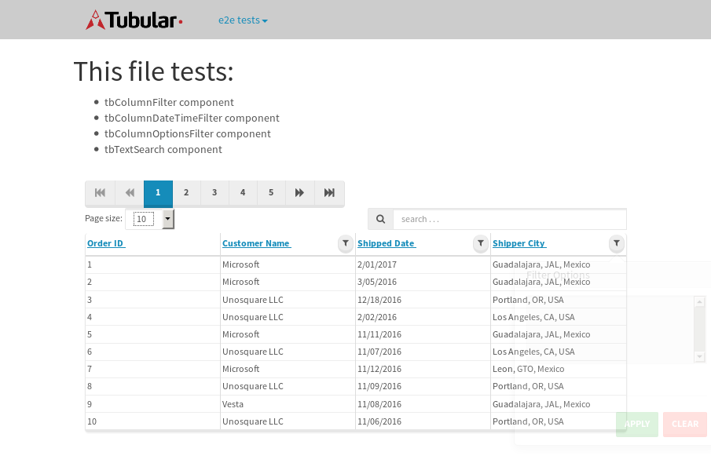
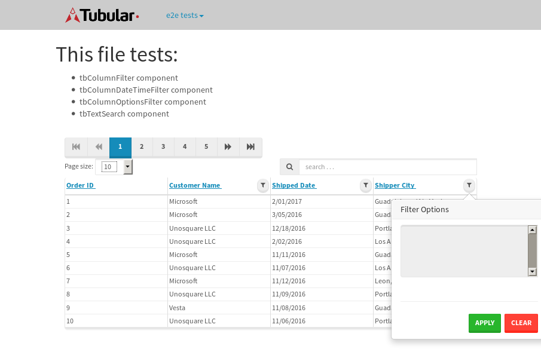

tbColumn.Grid Sorting - 175.544sTests: 5Skipped: 0Failures: 3 should sort data in ascending order then on descending order when sorting by Order Id column - 43.937sExpected '1' to be '500'.✗Expected '20' to be '481'.✗Tests passed: 50.00%should order data in ascending order when click-sorting an unsorted text column - 22.944sTests passed: 100.00%should order data in descending order when click-sorting an ascending-sorted text column - 42.831sExpected 'Advanced Technology Systems' to be 'Vesta'.✗Tests passed: 0.00%should order data in ascending order when click-sorting an unsorted date column - 22.904sTests passed: 100.00%should order data in descending order when click-sorting twice an unsorted date column - 42.919sExpected '12/30/2015' to match /1\/01\/2016/.✗Tests passed: 0.00%
tbEmptyForm - 18.752sTests: 3Skipped: 0Failures: 0 should have an empty required field - 17.152sTests passed: 100.00%should not be able to click on save - 0.029sTests passed: 100.00%should load default value for numeric field - 0.033sTests passed: 100.00%
Tubular Filters.tbColumnFilter - 105.223sTests: 12Skipped: 0Failures: 0 should cancel filtering when clicking outside filter-popover - 8.775sTests passed: 100.00%should disable Value text-input for "None" filter - 5.431sTests passed: 100.00%should disable apply button for "None" filter - 5.543sTests passed: 100.00%should decorate popover button when showing data is being filtered for its column - 10.753sTests passed: 100.00%should correctly filter data for the "Equals" filtering option - 6.316sTests passed: 100.00%should correctly filter data for the "Not Equals" filtering option - 6.218sTests passed: 100.00%should correctly filter data for the "Contains" filtering option - 6.472sTests passed: 100.00%should correctly filter data for the "Not Contains" filtering option - 6.579sTests passed: 100.00%should correctly filter data for the "Starts With" filtering option - 5.888sTests passed: 100.00%should correctly filter data for the "Not Starts With" filtering option - 5.861sTests passed: 100.00%should correctly filter data for the "Ends With" filtering option - 5.855sTests passed: 100.00%should correctly filter data for the "Not Ends With" filtering option - 5.935sTests passed: 100.00%
Tubular Filters.tbColumnDateTimeFilter - 128.841sTests: 12Skipped: 0Failures: 0 should cancel filtering when clicking outside filter-popover - 7.266sTests passed: 100.00%should disable Value text-input for "None" filter - 5.408sTests passed: 100.00%should disable apply button for "None" filter - 5.628sTests passed: 100.00%should clear filtering when clicking on Clean button - 17.587sTests passed: 100.00%should decorate popover button when showing data is being filtered for its column - 10.941sTests passed: 100.00%should correctly filter data for the "Equals" filtering option - 6.048sTests passed: 100.00%should correctly filter data for the "Not Equals" filtering option - 7.216sTests passed: 100.00%should correctly filter data for the "Between" filtering option - 11.652sTests passed: 100.00%should correctly filter data for the "Greater-or-equal" filtering option - 12.01sTests passed: 100.00%should correctly filter data for the "Greater" filtering option - 11.825sTests passed: 100.00%should correctly filter data for the "Less-or-equal" filtering option - 10.853sTests passed: 100.00%should correctly filter data for the "Less" filtering option - 11.191sTests passed: 100.00%
Tubular Filters.tbColumnOptionsFilter - 27.921sTests: 3Skipped: 0Failures: 2 should cancel filtering when clicking outside filter-popover - 5.694sFailed: Index out of bound. Trying to access element at index: 0, but there are only 0 elements that match locator By(css selector, option)✗Tests passed: 0.00%should decorate popover button when showing data is being filtered for its column - 5.66sFailed: Index out of bound. Trying to access element at index: 0, but there are only 0 elements that match locator By(css selector, option)✗Tests passed: 50.00%should filter column-elements in accordance to the selected filter when selecting a single option - 5.57sTests passed: 100.00%
Tubular Filters.tbTextSearch - 46.654sTests: 5Skipped: 0Failures: 0 min-chars is not set - 0.066sTests passed: 100.00%should filter data in searchable-column customer name to matching inputted text, starting from 3 characters - 7.155sTests passed: 100.00%should filter data in searchable-column shipper city to matching inputted text, starting from 3 characters - 12.676sTests passed: 100.00%should show clear button when there is inputted text only - 5.546sTests passed: 100.00%should clear filtering when clicking clear button - 15.378sTests passed: 100.00%
tbForm related components.tbCheckboxField - 8.982sTests: 2Skipped: 0Failures: 0 should save changes on "SAVE" - 3.888sTests passed: 100.00%should discard changes on "CANCEL" - 2.585sTests passed: 100.00%
tbForm related components.tbDropDownEditor - 11.425sTests: 5Skipped: 0Failures: 0 should set initial input value to the value of "value" attribute when defined - 1.284sTests passed: 100.00%should show the component name value in a label field when "showLabel" attribute is true - 1.403sTests passed: 100.00%should show a help field equal to this attribute, is present - 1.423sTests passed: 100.00%should submit modifications to item/server when clicking form "Save" - 4.009sTests passed: 100.00%should NOT submit modifications to item/server when clicking form "Cancel" - 2.258sTests passed: 100.00%
tbForm related components.tbTextArea - 16.524sTests: 7Skipped: 0Failures: 0 should set initial input value to the value of "value" attribute when defined - 1.414sTests passed: 100.00%should be invalidated when the number of chars is not in the range of "min" and "max" attributes - 2.064sTests passed: 100.00%should show the component name value in a label field when "showLabel" attribute is true - 1.208sTests passed: 100.00%should show a help field equal to this attribute, is present - 1.442sTests passed: 100.00%should require the field when the attribute "required" is true - 1.98sTests passed: 100.00%should submit modifications to item/server when clicking form "Save" - 4.481sTests passed: 100.00%should NOT submit modifications to item/server when clicking form "Cancel" - 2.494sTests passed: 100.00%
tbForm related components.tbDateEditor - 14.121sTests: 6Skipped: 0Failures: 0 should set initial date value to the value of "value" attribute when defined - 1.441sTests passed: 100.00%should be invalidated when the date is not in the range of "min" and "max" attributes - 1.905sTests passed: 100.00%should show the component name value in a label field when "showLabel" attribute is true - 1.537sTests passed: 100.00%should show a help field equal to this attribute, is present - 1.432sTests passed: 100.00%should submit modifications to item/server when clicking form "Save" - 3.087sTests passed: 100.00%should NOT submit modifications to item/server when clicking form "Cancel" - 3.317sTests passed: 100.00%
tbForm related components.tbTypeaheadEditor - 19.178sTests: 7Skipped: 0Failures: 0 should show an options list when there is an API-info/component entered-data - 2.186sTests passed: 100.00%should select the option clicked - 2.016sTests passed: 100.00%should show a "delete" button when an option/match is selected, and delete the option if button is clicked - 2.923sTests passed: 100.00%should show a label value equal to the component name when "showLabel" attribute is true - 1.682sTests passed: 100.00%should require a value when "require" attribute is true - 2.042sTests passed: 100.00%should submit modifications to item/server when clicking form "Save" - 4.469sTests passed: 100.00%should NOT submit modifications to item/server when clicking form "Cancel" - 2.106sTests passed: 100.00%
tbForm related components.tbSimpleEditor - 20.341sTests: 9Skipped: 0Failures: 0 should set initial input value to the value of "value" attribute when defined - 1.287sTests passed: 100.00%should be invalidated when the number of chars is not in the range of "min" and "max" attributes - 2.461sTests passed: 100.00%should show the component name value in a label field when "showLabel" attribute is true - 1.42sTests passed: 100.00%should set input placeholder to the value of "placeholder" attribute - 1.75sTests passed: 100.00%should validate the control using the "regex" attribute, if present - 1.626sTests passed: 100.00%should show a help field equal to this attribute, is present - 1.686sTests passed: 100.00%should require the field when the attribute "required" is true - 1.711sTests passed: 100.00%should submit modifications to item/server when clicking form "Save" - 4.6sTests passed: 100.00%should NOT submit modifications to item/server when clicking form "Cancel" - 2.5sTests passed: 100.00%
tbForm related components.tbNumericEditor - 17.593sTests: 7Skipped: 0Failures: 0 should set initial component value to the value of "value" attribute when defined - 1.424sTests passed: 100.00%should be invalidated when the entered number is not in the range of "min" and "max" attributes - 2.234sTests passed: 100.00%should show the component name value in a label field when "showLabel" attribute is true - 1.811sTests passed: 100.00%should show a help field equal to this attribute, is present - 1.727sTests passed: 100.00%should require the field when the attribute "required" is true - 1.926sTests passed: 100.00%should submit modifications to item/server when clicking form "Save" - 4.835sTests passed: 100.00%should NOT submit modifications to item/server when clicking form "Cancel" - 2.296sTests passed: 100.00%
tbForm Connection Error NoModelKey - 2.034sTests: 1Skipped: 0Failures: 0 tbForm connection error functionality - 0.007sTests passed: 100.00%
tbForm Connection Error NoServerUrl - 1.805sTests: 1Skipped: 0Failures: 0 tbForm connection error functionality - 0.002sTests passed: 100.00%
tbGridComponents - 29.015sTests: 6Skipped: 0Failures: 1 should add item with newRow method - 3.87sTests passed: 100.00%should add item with newRow method and cancel action - 0.35sTests passed: 100.00%should update item with tbSaveButton - 1.44sTests passed: 100.00%should NOT update item on cancel Update action - 0.746sTests passed: 100.00%should remove item with tbRemoveButton - 20.56sExpected 21 not to be 21, 'should remove the row from the table'.✗Tests passed: 50.00%should NOT remove item on cancel Remove action - 0.689sTests passed: 100.00%
tbGridPager.navigation buttons - 2.423sTests: 1Skipped: 0Failures: 0 should perform no action when clicking on the numbered navigation button corresponding to the current-showing results page - 0.594sTests passed: 100.00%
tbGridPager.navigation buttons.first/non-last results page related functionality - 0.69sTests: 2Skipped: 0Failures: 0 should disable "first" and "previous" navigation buttons when in first results page - 0.104sTests passed: 100.00%should enable "last" and "next" navigation buttons when in a results page other than last - 0.586sTests passed: 100.00%
tbGridPager.navigation buttons.last/non-first results page related functionality - 1.138sTests: 2Skipped: 0Failures: 0 should disable "last" and "next" navigation buttons when in last results page - 0.58sTests passed: 100.00%should enable "first" and "previous" navigation buttons when in a results page other than first - 0.558sTests passed: 100.00%
tbGridPager.page navigation - 3.586sTests: 5Skipped: 0Failures: 0 should go to next results page when clicking on next navigation button - 1.015sTests passed: 100.00%should go to previous results page when clicking on previous navigation button - 0.984sTests passed: 100.00%should go to last results page when clicking on last navigation button - 0.56sTests passed: 100.00%should go to first results page when clicking on first navigation button - 0.531sTests passed: 100.00%should go to corresponding results page when clicking on a numbered navigation button - 0.496sTests passed: 100.00%
tbGridPagerInfo - 4.157sTests: 2Skipped: 0Failures: 0 should show text in accordance to numbered of filter rows and current results-page - 1.687sTests passed: 100.00%should show count in footer - 0.024sTests passed: 100.00%
tbPageSizeSelctor - 11.61sTests: 4Skipped: 0Failures: 0 should filter up to 10 data rows per page when selecting a page size of "10" - 2.483sTests passed: 100.00%should filter up to 20 data rows per page when selecting a page size of "20" - 2.372sTests passed: 100.00%should filter up to 50 data rows per page when selecting a page size of "50" - 2.596sTests passed: 100.00%should filter up to 100 data rows per page when selecting a page size of "100" - 2.717sTests passed: 100.00%
tbSingleForm - 13.175sTests: 8Skipped: 1Failures: 1 should load correct info - 0.003s***Skipped***Tests passed: 0%should change customer name - 1.825sTests passed: 100.00%should save it - 2.05sExpected '' to be 'Saved'.✗Tests passed: 50.00%should clear the inputs - 1.856sTests passed: 100.00%should update - 2.008sTests passed: 100.00%should reset editor - 1.775sTests passed: 100.00%should not save if not Changes - 1.736sTests passed: 100.00%should not be able to click on save - 1.921sTests passed: 100.00%


{kind=link}
{kind=link}